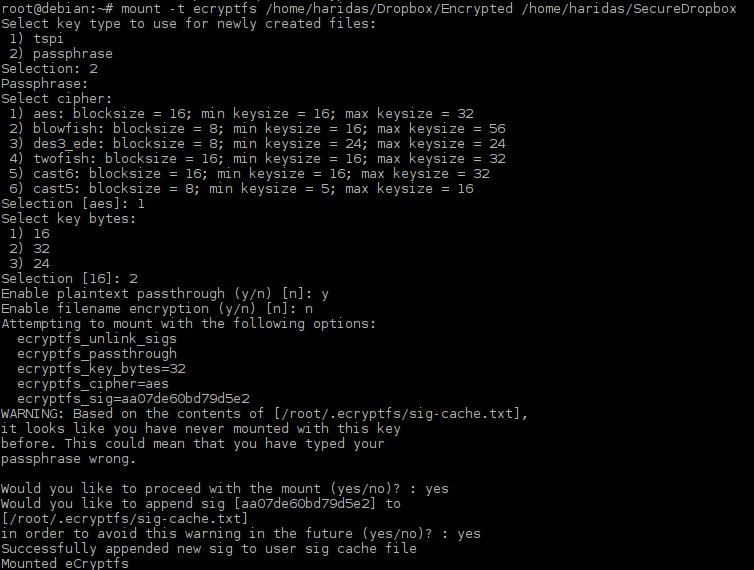

There is a plenty of cloud storage services out there for free.
It's very convenient and flexible that we can sync our local files with
remote storage. For simple and non-sensitive contents this is very useful.
But we know that the contents on the net are being open. There is a chance for
those contents will get read by others.
I use Dropbox with my Debian machine to sync my local documents.
But I'm worried about putting some of my documents on the cloud after
knowing that there is a chance of breach. Because of that I avoided putting
those contents on my cloud storage. Later I figured out that we can
put an encrypted contents. I tried to use GPG and other methods to encrypt
the contents and putting them on cloud. But those are all requires lot of work to
push contents each time. GPG mainly used for transferring encrypted contents
between sender and receiver, so that is not the good solution. We required
a method to add the encrypted documents only to our cloud storage and the same
time we want to access the actual copy of the document on our machine.
Then I saw options for the ecrypted file systems like ecryptfs,
encfs are available under Linux file systems. Which provide
good flexibility that I required, and it only required pain of one time setup.
encfs is a User space filesystem, but the ecryptfs is working in the kernel space,
because of that ecryptfs is little difficult to setup. But ecryptfs is faster
and more secure than the encfs. Both of them using a passphrase as the initial
key to do all the encryption and decryption, we can keep this
passphrase with other file systems or even in external storage device, This is like
normal password required to initiate the encryption or decryption.
Here I'm explaining how to use the ecryptfs,
First install the packages required,
From root user follow these commands.
#apt-get install ecryptfs-utils
#modprobe cryptfs
I'm using Dropbox as my cloud storage. So inside your drobox folder just create
one folder named Encrypted.
$ mkdir ~/Dropbox/Encrypted
$ mkdir ~/SecureDropbox
We are going to keep our documents under the ~/SecureDropbox folder, and the
ecryptfs will generate the corresponding encrypted files on the
~/Dropbox/Encrypted folder. So Dropbox only see this Encrypted files.
Actually in terms of ecryptfs the ~/Dropbox/Encrypted act as an encrypted
file system partition(like /dev/sda5) and the ~/SecureDrobox act as the mount
point where we can see the actual content of the files, we require the proper
passphrase to mount the encrypted file system to local folder.This mounting and
creation of the encrypted file system is explained bellow.
To mount the encrypted device to the mount point, use the normal mount command
with ecryptfs as its filesystem. This step ask for set of questions.
# Mount command requires root privilage.
mount -t ecryptfs /home/haridas/Dropbox/Encrypted /home/haridas/SecureDropbox
Check this console page to see the complete list of commands required to finish
the mounting operation.

Now check the filesystem to see whether the encrypted filesystem got mounted
to the mount point, use df command.
So if there is no error, you can now check for the file encryption by directly
adding one text file in to /home/haridas/SecureDropbox, immediately you can see
the encrypted file with the same name under /home/haridas/Dropbox/Encrypted.
Try out this.
So we are done with the keeping only the encrypted files under Dropbox folder.
So don't need to worry about the sensitive documents. But one thing is that in
order to decrypt the files from other machines, you required the passphrase and
other machines should support the ecryptfs. You can't us mobile
devices to view the encrypted content.
We need to mount the ecryptefs filesystem in the boot time to avoid that step
every time. That requires passphrase, and set of other configurations, that was
done while mounting the file system initially. We can pass this automatically by
putting it in a .ecryptfsrc file under root home directory. So at boot time
we can see system can read it.
The /root/.ecryptfsrc file should have the following lines
key=passphrase:passphrase_passwd_file=/home/haridas/.ecryptfs/.secret-passphrase.txt
ecryptfs_sig=b2f118ee01beb78b
ecryptfs_cipher=aes
ecryptfs_key_bytes=32
ecryptfs_passthrough=n
ecryptfs_enable_filename_crypto=n
After creating /root/.ecryptfsrc file, add the following line to /etc/fstab
to automount at boot time.
/home/haridas/Dropbox/Encrypted /home/haridas/SecureDropbox ecryptfs
defaults 0 0
The passphrase is the important thing that you have to keep in your machine or
with external disk. Make sure that the passphrase is available to the system
when you are trying to mount it in the booting time itself.
Keep the passphrase safe !. Which determines the strength of your encryption.
Enjoy.
There are comments.